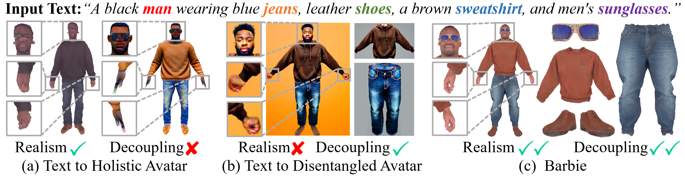
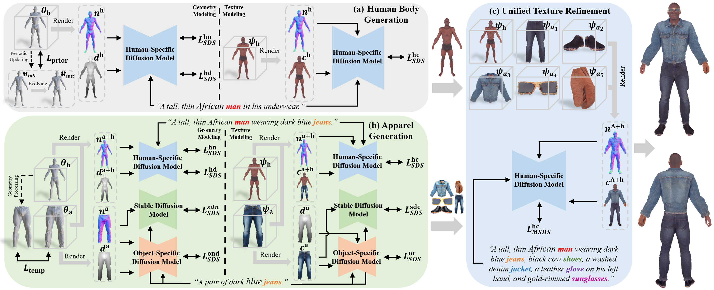

Using only texts as input, our method can generate Barbie-style 3D avatars. "Barbie-style" refers to (1) the generated 3D avatars exhibiting high quality and diversity; (2) the generated body, garments, and accessories being disentangled; and (3) the generated results supporting seamless apparel composition and user-friendly animation, similar to Barbie dolls.
Results Overview
Disentangled Avatar Gallery
Video results are loading slowly, please be patient.
Abstract
Recent advances in text-guided 3D avatar generation have made substantial progress by distilling knowledge from diffusion models. Despite the plausible generated appearance, existing methods cannot achieve fine-grained disentanglement or high-fidelity modeling between inner body and outfit. In this paper, we propose Barbie, a novel framework for generating 3D avatars that can be dressed in diverse and high-quality Barbie-like garments and accessories. nstead of relying on a holistic model, Barbie achieves fine-grained disentanglement on avatars by semantic-aligned separated models for human body and outfits. These disentangled 3D representations are then optimized by different expert models to guarantee the domain-specific fidelity. To balance geometry diversity and reasonableness, we propose a series of losses for template-preserving and human-prior evolving. The final avatar is enhanced by unified texture refinement for superior texture consistency. Extensive experiments demonstrate that Barbie outperforms existing methods in both dressed human and outfit generation, supporting flexible apparel combination and animation.
Method Highlights

Compared to holistic methods, Barbie effectively decouples the human body from different apparels while exhibiting fine details in the hands and head. In contrast to disentangled approaches, Barbie demonstrates a notable quality advantage and is capable of generating detailed accessories.
Methodology

Barbie consists of three stages: (a) Using human-specific diffusion models and self-evolving human prior loss, Barbie generates a plausible and high-fidelity basic human body; (b) Initializing with the semantic-aligned template mesh, Barbie creates high-quality clothes and accessories piece by piece using object-specific diffusion models and template-preserving loss; (c) Finally, Barbie jointly fine-tunes the assembled avatar to further enhance the texture harmony and consistency.
Comparisons with Text-to-Avatar Methods
Comparisons with Text-to-Object Methods
Apparel Composition
BibTeX
@article{sun2024barbie,
title={Barbie: Text to Barbie-Style 3D Avatars},
author={Sun, Xiaokun and Zhang, Zhenyu and Tai, Ying and Wang, Qian and Tang, Hao and Yi, Zili and Yang, Jian},
journal={arXiv preprint arXiv:2408.09126},
year={2024}
}